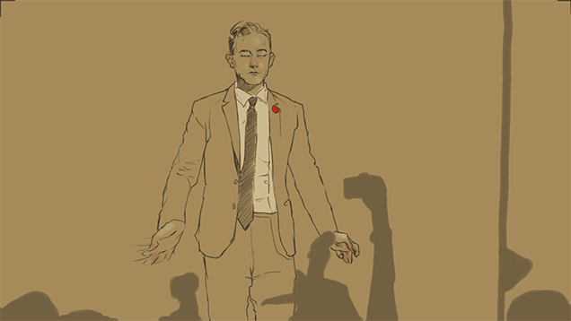
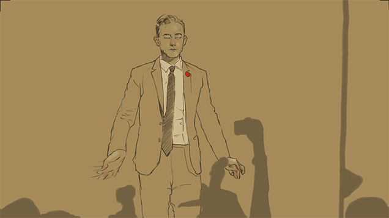

Différents types d'animations :
L'animation 2D, utilisée pour la création de films d'animations, de dessins animés, de vidéos commerciales, de publicités ou encore de jeux vidéos. Elle consiste en la création d'objets et/ou de personnages, dans un espace bidimensionnel, c'est-à-dire qu'avec de la largeur et de la longueur. Le but est donc de dessiner le même dessin, mais en y changeant petit à petit ses mouvements pour avoir y avoir une animation.
Le stop motion est une technique qui va permettre de créer un mouvement à partir d’objets initialement immobiles. Elle consiste donc à créer le déplacement de personnages ou d’objets d’un point à un autre. On l’utilise dans la production de publicité ou de film d’animation, par exemple en animant des figurines ou des personnages en pâte à modeler. Un exemple concret, la création de la série "Wallace et Gromit" faite enièrement à partir de pâte à modeler.
Motion design (ou graphisme de mouvement en français), est un style correspondant à l'art de donner vie aux images. C'est avant tout une technique permettant d'animer différents éléments en vue d'en faire une vidéo d'animation. Ainsi, cela consiste à animer différents éléments graphiques tels que des images, des pictogrammes ou de la typographie, le tout synchronisé sur du son.
Également appelée animation par ordinateur, l'animation 3D est l'un des types d'animation les plus populaires. L'animation 3D est utilisée non seulement pour les longs métrages, mais aussi pour les courts métrages, les jeux vidéos ou les publicités. Exemple de long métrage réalisé en images de synthèse 3D, étant le plus connu à ce jour : Toy Story.
Différentes classes de caméras :
Ces caméras assez récentes sont venues perturber la frontière entre camescopes et caméras professionnelles en insérant une gamme intermédiaire répondant aux besoins des petits producteurs indépendants. Elles sont généralement d’une taille supérieure à un camescope mais bien moins encombrante que les caméras pro de plateau ou de cinéma et proposent une excellente qualité d’image.


Les caméras professionnelles sont de très grosses caméras ayant des objectifs interchangeables, le paramétrage de la colorimétrie y est bien souvent plus poussé, et elles sont systématiquement synchronisables par timecode. Ce sont avant tout des appareils inabordables car leur qualité de confection en font des objets nobles.
Caméras qualifiées par leur taille et leurs très grands capteurs supérieurs à la majorité des caméras prosommateurs, ce qui leur octroie une qualité d’image cinématographique comparable aux caméras professionnelles. Les objectifs sont interchangeables, et sont capables d’exporter les rushs vidéos au format RAW qui permet une grande souplesse d’ajustement.


Caméras dites "dédiées", car elles sont utilisées pour un besoin spécifique, comme les caméras miniatures pour les sports extrêmes ou l'embarcation dans des véhicules motorisés, les caméras à haute cadence pour le slow motion, les caméras 3D, ou encore les caméras drones.
Deux sortes d'effets spéciaux... :
Ensemble d'effets spéciaux réalisés pendant le/les tournage(s) destinés à simuler des objets, des environnements, des personnages ou des phénomènes qui n’existent pas dans la réalité.
Il s'agit dans la majorité du temps, de maquillage, de prothèses que les acteurs vont être amenés à porter. C'est utilisé afin d'illustrer un personnage emblématique d'une série ou d'un film. Egalement utile pour l'apparition de sang dans des scènes gores ou d'actions.
Ensemble des techniques d’animation utilisées pour créer une illusion au sein d’un produit cinématographique permettant la reproduction d'environnements qui seraient dangereux, coûteux, peu pratique ou impossible de tourner en prise de vues réelle.
Technique d'effets visuels utilisée dans le domaine du cinéma, de la télévision ou bien de la photo, consistant en l'intégration dans une même image, des objets filmés séparamment ou des objets créés par ordinateur.
 

Technique cinématographique consistant à relever image par image les contours d'un dessin pour en retranscrire la forme et les actions dans un film d'animation.
Technique utilisée dans le domaine du cinéma permettant la conception et l'utilisation d'un modèle. Selon son objectif et les moyens utilisés, la modélisation est dite mathématique, géométrique, 3D, empirique, mécaniste ou encore cinématique.